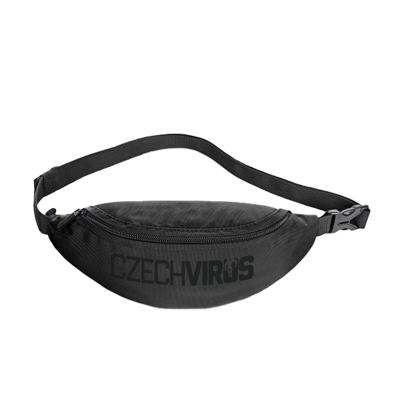
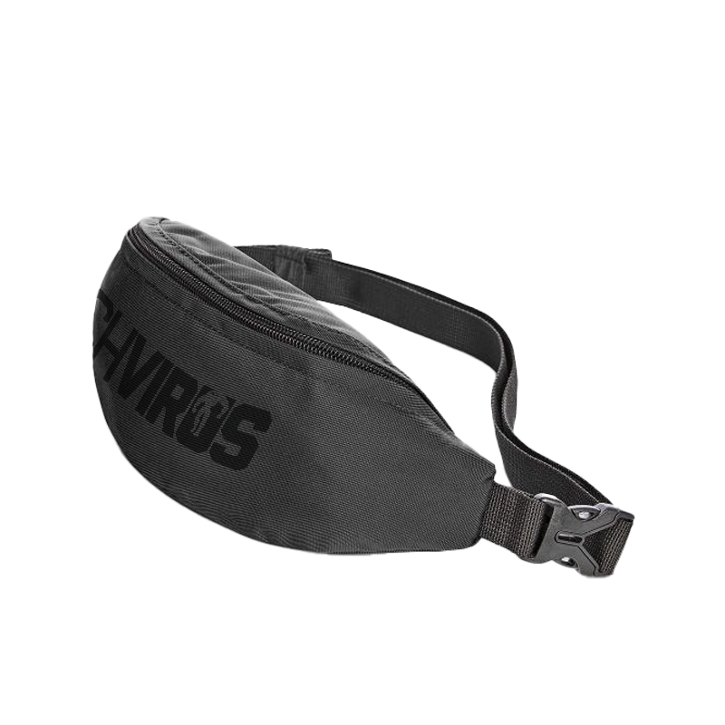

Czech Virus® Merch
Bumbag Czech Virus®
Czech Virus® Bumbag je dokonalý minimalista. Lehká, kompaktní a stylová – s objemem 1,2 litru má prostor na všechno podstatné: klíče, peněženku, telefon a drobnosti.
Vyrobeno z recyklovaného rPET materiálu se sofistikovaným skrytým zipem. Nositelná na pase nebo přes rameno – cross-body styl, jak se ti líbí. Žádné kompromisy, žádná zbytečnost.

Proč zvolit
Bumbag Czech Virus®?
Detaily & zpracování
Slim & stylová
Nosíš každý den příliš velkou tašku s sebou? Czech Virus® Bumbag uleví tvým zádům i stylu. Nepotřebuješ velký batoh – stačí klíče, peněženka, telefon. A přesně na to je navržená.
Nastavitelný popruh délkově i v šíři ti umožní nosit ji na pase jako klasickou ledvinku nebo přes rameno cross-body. Boční uzávěr s elastickou zarážkou zajistí rychlé oblékání i sundávání bez nutnosti rozepínat celý popruh.
Zadní zipová kapsa je ideální pro věci, které chceš mít ještě blíž – hotovost, doklady nebo klíče od auta. Vyrobeno z recyklovaných PET lahví s GRS certifikací – ekologicky odpovědné bez kompromisů v kvalitě nebo stylu.
.jpg)
Pohled zblízka
Bumbag v akci
.jpg)
.jpg)
.jpg)
Technické parametry
Specifikace & certifikace
Czech Virus® Bumbag splňuje přísné standardy kvality a ekologické odpovědnosti. Certifikace GRS garantuje použití recyklovaných materiálů a férovou výrobu.
Přesné rozměry
Dimenze Bumbag
S rozměry 29 × 12 × 8 cm a objemem 1,2 litru nabízí Czech Virus® Bumbag kompaktní a stylové řešení pro každodenní nošení všech nezbytností.
